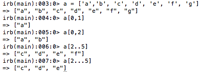
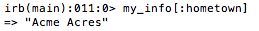

letters = ['a','b','c']
Awww, what a cute litte variable. But what are those [ ] for? Glad you asked. That's an array. Arrays are ordered collections. Like in the example above, if we call upon the variable 'letters', the array [a,b,c] will come up, just like the same order we put it there! Ok, here's a little jargon: Arrays are an integered index. You might be saying, "Uhh...what?" Don't worry. I've got your back. This just means that each item in the array is assigned a number based on it's order. "Oh, you mean like a=1, b=2 -" Let me stop you there. Because you're on the right track. Except that array indexing starts at 0. Here, let me show you:

So, how would I call upon individual elements? Well, like so:

Let's talk about a couple interesting points up there. Did you notice that when a[0,2], the element stored in place 2 was not called? That's because the second value listed is not inclusive. It calls all values from 0 up to 2. That's also how the three dots work in a[2...5]. Three dots are exclusive. However, two dots are inclusive, which is why 'f' is returned to us in a[2..5].
my_info = { :first_name => "Bugs", :last_name => "Bunny", :hometown => "Acme Acres", :age => 75 }
Look at that lovely example above! As you could guess from the header of this section, that's a hash. So, what makes that different than the array? Hashes consist of key:value pairs. So instead of calling upon an integer like a[0] to get 'a', we would call up my_info(hometown) to get "Acme Acres".

They also use these guys { } instead of these guys [ ] when setting up the pairs. Hashes in the most recent version of ruby are also ordered collections. I guess that makes hashes and arrays a tad more similar.